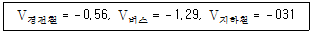
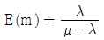
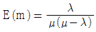
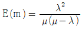
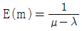
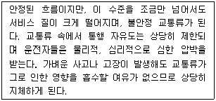
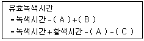
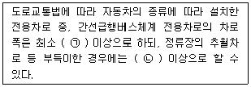
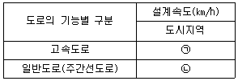
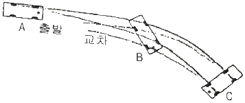

교통기사 (2018-04-28 기출문제)
1과목: 교통계획
1. 버스회사 운영체계에서 공영버스와 민영버스에 관한 설명으로 옳지 않은 것은?
- 공영버스는 정치적 간섭을 받는다.
- 승객의 편리성과 안전성은 민영버스가 좋다.
- 비용측면에서 공영회사가 민영회사보다 비효율적이다.
- 승객의 수요가 많지 않은 지역에서 균형 잡힌 서비스공급은 공영버스가 좋다.
(정답률: 74%)

2. 대중교통 운영지표에서 최소배차간격을 결정하는 데 사용되지 않는 지표는?
- 차량 폭
- 가·감속률
- 차량길이
- 정류장 정차시간
(정답률: 73%)
3. 교통수단 선택 시 로짓(Logit) 모형을 이용하여 경전철, 버스, 지하철의 효용함수 값을 다음과 같이 구하였을 때, 경전철의 수단 선택확률은?

- 0.2500
- 0.2593
- 0.3500
- 0.3615
(정답률: 71%)
4. 보행자 서비스 수준에 대한 설명으로 옳은 것은?
- 서비스 수준 A는 보행교통류율(인/분/m)이 10 이하이고 보행속도를 자유롭게 선택 가능한 상태
- 서비스 수준 C는 보행교통류율(인/분/m)이 42 이하이고 정상적인 속도로 보행 가능한 상태
- 서비스 수준 D는 보행교통류율(인/분/m)이 60 이하이고 타 보행자 앞지르기 시 약간의 마찰이 있는 상태
- 서비스 수준 E는 보행교통류율(인/분/m)이 106 이하이고 평소 보행속도로 걸을 수 없는 상태
(정답률: 59%)
5. 가구방문조사(가정면접조사)의 표본크기로서 인구 50000 미만의 도시규모인 경우 일반적인 표본의 크기로 옳은 것은?
- 전체 가구수의 5%
- 전체 가구수의 20%
- 전체 가구수의 30%
- 전체 가구수의 40%
(정답률: 62%)
6. 교통수요 관리방안 중 차량수요를 감소시키기 위한 방법으로 가장 거리가 먼 것은?
- 재택근무
- 램프미터링
- 도심통행료 징수
- 대중교통이용의 편리화
(정답률: 83%)
7. 소득이나 자동차 보유 대수 등의 설명변수 범주에 따라 교차 분류시켜 가구 당 통행발생량을 추정하는 모형은?
- 원단위법
- 증감율법
- 회귀분석법
- 카테고리분석법
(정답률: 76%)
8. 대중교통수단의 기능으로 가장 거리가 먼 것은?
- 교통혼잡을 완화할 수 있다.
- 도시교통의 기본적인 이동권을 확보해 준다.
- 도시미관과 소음 등의 환경문제를 줄여준다.
- 도시 내 주차공간을 확대하여 도시 생활공간으로 이용할 수 있도록 활성화 시켜준다.
(정답률: 80%)
9. 통행실태조사 기법 중 차량번호판 조사에 대한 설명으로 옳은 것은?
- 차량을 정지시켜야 하기 때문에 안전상 위험이 많다.
- 조사지역이 넓고 교통량이 많은 경우 우편 설문조사보다 적절한 방법이다.
- 각 차량이 처음 관측된 곳을 기점으로, 마지막으로 관측된 곳을 종점으로 간주한다.
- 조사 지점들 사이의 거리를 가능한 멀리하면 정확한 기·종점 정보의 수집이 가능하다.
(정답률: 73%)
10. 교통 혼잡을 감안한 주행시간함수를 이용하여 최단경로에 교통량을 배정하는 방법은?
- 용량제약법
- 평균성장율법
- 전환율 곡선법
- 카테고리분석법
(정답률: 70%)
11. 교통의 공간적 분류에서 국가교통의 교통체계의 해당하지 않는 것은?
- 철도
- 항만
- 간선도로
- 고속도로
(정답률: 76%)
12. 다음 중 교통투자사업의 수익성이 있다고 판단할 수 있는 내부수익률(IRR)의 조건은?
- IRR ≤ 10%
- IRR ＞ 10%
- 사용된 할인율(r) ＜ IRR
- 사용된 할인율(r) ＞ IRR
(정답률: 75%)
13. 교통계획을 장기교통계획과 단기교통계획으로 구분하여 설명한 것으로 옳은 것은?
- 장기교통계획은 시설지향적이고 단기교통계획은 서비스 지향적이다.
- 장기교통계획은 저자본 비용이고 단기교통계획은 자본 집약적이다.
- 장기교통계획은 서로 다른 대안이고 단기교통계획은 유사한 대안이다.
- 장기교통계획은 많은 교통수단을 동시에 고려하고 단기교통계획은 단일교통 수단 위주로 고려한다.
(정답률: 69%)
14. 도로를 확장하기 전 교통량은 1일 10000대로 운행비가 대당 200원이었던 것이, 도로 확장 후 교통량은 15000대, 운행비는 대당 150원으로 감소하였다면, 이에 따른 소비자 잉여는?
- 125000원
- 437500원
- 625000원
- 875000원
(정답률: 59%)
15. 다음 교통사업의 평가 방법 중 경제적 효율성 분석방법이 아닌 것은?
- 내부수익률 방법
- 순현재가치 방법
- 편익-비용비 방법
- 비용-효과 분석방법
(정답률: 75%)
16. 교통체계관리(TSM)에 관한 설명 중 옳지 않은 것은?
- TSM은 장기교통계획 과정에 해당한다.
- TSM은 기존 교통시설을 최대한 이용하는데 주안점을 두고 있다.
- TSM의 목표는 도로용량과 소통증진은 물론이고 안전성 향상에도 있다.
- TSM은 교통시설 확충이 한계에 도달하여 제안된 교통체계 관리기법이다.
(정답률: 78%)
17. 선호의식(Stated Preference)데이터와 선호결과(Revealed Preference)데이터에 대한 설명으로 옳은 것은?
- SP데이터는 기상상황에 대한 대안을 평가할 수 없다.
- SP데이터는 1인의 회답자로부터 복수데이터를 얻을 수 있다.
- RP데이터는 현존하지 않는 대안에 대한 선호정보를 평가할 수 있다.
- RP데이터는 대체안의 속성에 대한 다양한 형태의 자료를 얻을 수 있다.
(정답률: 70%)
18. 조사지역 내에 하나 혹은 여러 개의 선을 그어 이 선을 통과하는 차량을 조사하는 기법으로, 조사된 O-D표를 검증하거나 보완하기 위하여 실시하는 것은?
- 스크린라인 조사
- 차량번호판 조사
- 교통류적응 조사
- 차량재차인원 조사
(정답률: 85%)
19. 중력모형(Gravity Model)의 특징으로 옳지 않은 것은?
- 어떤 지역에서도 이용이 가능하다.
- 개인의 행태적(Behavioral)특성을 고려한다.
- 교통시설 정비 등에 의한 존 간의 소요시간 변화에 대하여 민감하게 대응할 수 있다.
- 장래 주어진 발생, 집중량에 일치시키기 위해 성장률법을 사용하여 반복계산을 하여야한다.
(정답률: 63%)
20. 교통정보의 유형 중 입력정보가 아닌 것은?
- 가공정보
- 교통상황정보
- 교통환경정보
- 지점·구간정보
(정답률: 33%)
2과목: 교통공학
21. 교통류 내에서 합리적인 속도의 최대값을 나타내며 현장의 도로조건에 적합한 교통운영 계획을 세우는 데 기준 속도로 이용하는 것은?
- 85% 속도
- 최빈 속도
- 평균값(mean)
- 중앙값(median)
(정답률: 80%)
22. 도로 기하구조의 기준이 되는 속도로 운전자의 안전을 보장하는 최대속도가 되는 것은?
- 지점속도(spot speed)
- 설계속도(design speed)
- 임계속도(optimum speed)
- 운전속도(operating speed)
(정답률: 76%)
23. 대기행렬 이론에서 서비스를 기다리는 평균차량대수를 나타내는 평균대기행렬 길이(E(m)) 식으로 옳은 것은? (단, λ는 평균도착률, μ는 평균서비스율이다.)




(정답률: 46%)
24. 출발하는 차량의 속도가 55km/h이고 차량의 자유속도가 70km/h일 경우의 충격파의 속도는?
- -15km/h
- -25km/h
- 15km/h
- 25km/h
(정답률: 63%)
25. 차로 폭이 3.6m인 4차선 1km의 평탄한 고속도로 구간에 버스가 6%, 트럭이 8%인 교통류가 이동하고 있다. 이 때 중차량 보정계수의 값은? (단, 버스와 트럭의 승용차 환산계수는 각각 1.3, 1.5이다.)
- 0.75
- 0.84
- 0.86
- 0.95
(정답률: 59%)
26. 어느 차량의 속도가 100km/h이고 교통량이 3000대/시 일 때 밀도는?
- 10대/km
- 20대/km
- 30대/km
- 60대/km
(정답률: 77%)
27. 다음 중 교통조사 방법에 대한 설명으로 옳지 않은 것은?
- 통상적으로 표본수를 최소 30개 이상으로 하여 정규분포함수를 분석에 활용한다.
- 평균차량조사법은 적어도 평면교차로가 없는 2km이상의 도로구간에서 적용하는 것이 바람직하다.
- 주행차량조사법은 신호등 간격이 충분히 넓은 도로에서 수행하여야 하며 대향 교통류 식별이 용이하여야 한다.
- 스피드건을 이용한 속도조사는 대상 차량으로부터 은닉되어야 하나 발사 방향간의 각이 적어도 30° 이내로 유지되게 한다.
(정답률: 62%)
28. 주기 당 총 손실시간이 10초, 임계차로군의 교통량비의 합이 0.6일 때 Webster 방법을 이용한 최적주기는?
- 30초
- 40초
- 50초
- 60초
(정답률: 52%)
29. 양방통행에 비하여 일방통행이 갖는 장점이 아닌 것은?
- 용량 증대
- 버스 용량의 증가
- 상충 이동류 감소
- 평균 통행속도증가
(정답률: 68%)
30. 차량검지기에 의해 파악된 교통량에 따라 신축성 있게 신호시간을 조정하며 교통량의 시간적 변화가 심한 독립교차로에 설치하여 단독으로 운용하는 데 적합한 신호기는?
- 전자 신호기
- 감응식 신호기
- 정주기식 신호기
- 차선지정 신호기
(정답률: 78%)
31. 평지에서의 노면과 타이어의 마찰계수가 0.5일 때 차량의 감속도는?
- 1.9m/sec2
- 3.4m/sec2
- 4.9m/sec2
- 6.4m/sec2
(정답률: 59%)
32. 다음 도로시설 중 용량산정에 추월시거가 적용되는 도로시설은?
- 간선도로
- 국지도로
- 고속도로
- 2차로 도로
(정답률: 68%)
33. 다음 중 도로에 매설할 필요가 없는 검지기는?
- 루프 검지기
- 압력 검지기
- 자기 검지기
- 초단파 검지기
(정답률: 66%)
34. 차량추종모형에서 운전자의 반응시간과 관련하여 고려하는 변수로 가장 거리가 먼 것은?
- 차량 속도
- 차량 위치
- 운전자 민감도
- 차량군의 밀도 차이
(정답률: 45%)
35. 신호교차로에서 신호시간 결정 시 최소 녹색시간을 결정하는 요소는?
- 해당 접근로의 보행교통량
- 해당 접근로의 차량교통량
- 해당 접근로의 보행자 횡단시간
- 가로지르기 접근로의 차량교통량
(정답률: 63%)
36. 어느 도로의 제한속도를 재검증하기 위하여 속도조사를 실시하려고 한다. 속도의 표준 편차를 15km/h, 허용오차를 2km/h로 하고자 할 때 필요한 표본 수는? (단, 신뢰도는 95%이다.)
- 약 217대
- 약 236대
- 약 278대
- 약 293대
(정답률: 59%)
37. 아래에서 설명하는 고속도로 기본 구간의 서비스 수준은?

- A
- D
- F
- FF
(정답률: 71%)
38. 유효녹색시간을 산정하는 아래 공식의 ( ) 안에 들어갈 용어가 모두 옳은 것은?

- A：출발지연시간, B：진행연장시간, C：소거손실시간
- A：출발지연시간, B：소거손실시간, C：진행연장시간
- A：진행연장시간, B：출발지연시간, C：소거손실시간
- A：진행연장시간, B：소거손실시간, C：출발지연시간
(정답률: 79%)
39. 어느 도로의 차두시간(Headway)을 측정한 결과 평균 2.0초/대로 나타났다. 이 도로의 차량 밀도가 30대/km이었다면, 차량의 평균 주행속도는?
- 30km/h
- 45km/h
- 60km/h
- 90km/h
(정답률: 75%)
40. 외부로부터의 자극에 대한 운전자의 반응에 관한 PIEV 이론에서 'I'에 해당하는 것은?
- 감지
- 반응
- 식별
- 판단
(정답률: 75%)
3과목: 교통시설
41. 아래의 내용에서 ㉠과 ㉡에 들어갈 말로 모두 옳은 것은?

- ㉠：3.50m, ㉡：3.00m
- ㉠：3.50m, ㉡：3.25m
- ㉠：3.25m, ㉡：2.75m
- ㉠：3.25m, ㉡：3.00m
(정답률: 52%)
42. 평면곡선의 최소길이를 정할 때 고려사항이 아닌 것은?
- 운전자가 핸들조작에 곤란을 느끼지 않도록 한다.
- 평면곡선의 회소길이는 최소완화곡선의 길이와 같다.
- 최소 평면곡선의 길이는 4초간 주행할 수 있는 길이 이상 확보한다.
- 도로 교각이 작은 경우에는 평면곡선 반지름이 실제의 길이보다 작아 보이는 착각을 피할 수 있도록 한다.
(정답률: 57%)
43. 옥내 주차장의 설계에 관한 설명으로 옳지 않은 것은?
- 기계식은 램프와 통로가 불필요하다.
- 조변도로의 교통소통에 영향을 주지 않는다.
- 토지가격이 높은 도심지역에 주로 설치된다.
- 램프식, 경사바닥식, 기계식으로 구분할 수 있다.
(정답률: 62%)
44. AASHTO 포장설계법의 경우 포장설계에 적용하는 자동차의 기준 하중은?
- 5톤 윤하중
- 8.2톤 단축하중
- 10톤 단축하중
- 20톤 단축하중
(정답률: 50%)
45. 곡선반경이 50m, 편경사가 0.08, 미끄럼 마찰계수가 0.55인 평지 도로에서 운전자가 안전하고 쾌적하게 주행할 수 있는 적정 주행 속도는?
- 53.25km/h
- 53.75km/h
- 63.25km/h
- 63.75km/h
(정답률: 66%)
46. 첨두시간 설계교통량의 결정 요소가 아닌 것은?
- 연평균 일교통량(대/일)(AADT)
- 차량의 종류 및 경사도, 측방여유폭
- 첨두시간 교통량의 연평균 일교통량에 대한 비율
- 첨두시간 중방향 교통량의 양방향 교통량에 대한 비율
(정답률: 64%)
47. 다음 중 자전거도로에 대한 설명으로 옳지 않은 것은?
- 자전거와 보행자의 분리 판단기준은 자전거교통량이 80대/시(약 700대/일)이다.
- 자전거도로는 횡단구성에 따라 자전거 전용도로, 자전거·보행자 겸용도로, 자전거·자동차겸용도로 등으로 구분된다.
- 자전거도로의 포장 면은 교차로와의 사이에 턱이 나지 않게 접속되도록 하고, 접속경사는 13% 이상이 되도록 설치한다.
- 자전거·자동차 겸용도로는 자전거 외에 자동차도 일시 통행할 수 있도록 차도에 노면표시로 구분하여 설치된 자전거도로이다.
(정답률: 62%)
48. 교통관리시설의 교통정보수집 장치가 아닌 것은?
- 루프검지기
- 영상검지기
- 도로전광표지(VMS)
- 차량번호판 자동인식 장치
(정답률: 77%)
49. 도로의 구조·시설 기준에 관한 규칙상 보도의 유효폭은 최소 얼마 이상으로 하여야 하는가? (단, 지방지역의 도로와 도시지역의 국지도로는 지형 상 불가능하거나 기존 도로의 증설·개설시 불가피하다고 인정되는 경우 제외한다.)
- 2m 이상
- 2.25m 이상
- 2.5m 이상
- 3m 이상
(정답률: 58%)
50. 여객자동차터미널 설계 시 유도차로의 최소노폭 기준은? (단, 유도차로가 일방통행인 경우는 제외한다.)
- 6m
- 6.5m
- 7m
- 7.5m
(정답률: 40%)
51. 도시지역 고속도로와 일반도로에 설치하는 중앙분리대의 최소 폭 기준으로 옳은 것은?(단, 자동차 전용도로는 제외한다.)
- 고속도로 2.0m 이상, 일반도로 1.0m 이상
- 고속도로 2.0m 이상, 일반도로 1.5m 이상
- 고속도로 2.5m 이상, 일반도로 1.5m 이상
- 고속도로 3.0m 이상, 일반도로 1.5m 이상
(정답률: 55%)
52. 다음 중 도로의 기능별 구분에 따른 ㉠과 ㉡의 설계속도 기준이 모두 옳은 것은?

- ㉠：100, ㉡：60
- ㉠：120, ㉡：80
- ㉠：100, ㉡：80
- ㉠：120, ㉡：100
(정답률: 64%)
53. 설계속도가 60km/h이고 편도 4차로인 도시부 도로망 설계 시 교차로 간의 순간격 값은?
- 240m
- 280m
- 320m
- 360m
(정답률: 49%)
54. 다음 중 설계속도가 100km/h인 도로의 평면 곡선부에 설치하는 완화곡선의 최소 길이 기준으로 옳은 것은?
- 50m
- 60m
- 65m
- 70m
(정답률: 54%)
55. 교통안전표지에서 지시표지 중 일방통행표지의 기호부분에 해당하는 내용은?
- 백색 바탕에 적색 기호
- 황색 바탕에 적색 기호
- 백색 바탕에 흑색 기호
- 청색 바탕에 백색 기호.
(정답률: 62%)
56. 종단선형 설계 시의 고려사항에 대한 설명으로 적절하지 않은 것은?
- 평면선형과 시각적으로 연속적이면서 서로 조화된 선형으로 설계한다.
- 오르막 경사에서는 트럭의 속도저하를 고려하여 오르막차로를 검토한다.
- 같은 방향으로 굴곡하는 두 종단곡선의 사이에 짧은 직선경사구간을 두는 것이 좋다.
- 길이가 긴 연속된 오르막 구간에서는 오르막경사가 끝나는 정상 부근에서 경사를 비교적 완만하게 설계한다.
(정답률: 74%)
57. 좌회전 차로에 대한 설명으로 옳지 않은 것은?
- 교차로에서 좌회전 차로가 필요한 경우에는 직진차로와 통합하여 설치하여야 한다.
- 차로 테이퍼는 좌회전 교통류를 직진차로에서 좌회전 차로로 유도하는 기능을 갖는다.
- 폭이 넓은 중앙분리대를 이용하여 좌회전 차로를 설치하는 경우에는 접근로 테이퍼가 필요 없게 된다.
- 설계요소로는 차로 폭, 접근로 테이퍼, 차로 테이퍼, 유출 테이퍼, 좌회전 차로 등으로 구성된다.
(정답률: 64%)
58. 간선도로 중심선 흐름과 같은 방향으로 설치하며 간선도로 주변에 위치한 개발지에서 발생하는 교통량을 간선도로 차량흐름에 방해하지 않는 범위 안에서 적정한 방법으로 간선 도로에 연결해주는 기능을 하는 것은?
- 측도
- 부도로
- 연결로
- 국지도로
(정답률: 54%)
59. 교통안전표지 중 규제표지의 모양으로 옳지 않은 것은?
- 원
- 삼각형
- 팔각형
- 사각형
(정답률: 53%)
60. 다음 중 입체교차의 연결로 설계 시 유출입 유형을 일관성 있게 계획할 때의 장점으로 옳지 않은 것은?
- 과속운전을 줄인다.
- 차로변경을 줄인다.
- 운전자의 혼란을 줄인다.
- 직진교통과의 마찰을 줄인다.
(정답률: 68%)
4과목: 도시계획개론
61. 도시·군관리계획의 입안에 관하여 주민의 의견을 청취하고자 하는 때에는 도시·군관리계획안을 최소 며칠 이상 일반이 열람할 수 있도록 하여야 하는가?
- 7일
- 14일
- 20일
- 30일
(정답률: 63%)
62. A도시의 인구가 10만명, B도시의 인구가 40만명, 두 도시 간의 거리가 9km일 때 A도시로부터 세력 분기점까지의 거리는?
- 3km
- 4km
- 5km
- 6km
(정답률: 47%)
63. 도시계획에서 계획인구를 산정하기 위한 방법 중 과거인구의 추세에 의한 예측방법이 아닌 것은?
- 등차급수법
- 비교유추법
- 최소자승법
- 로지스틱곡선법
(정답률: 48%)
64. 다음 중 앙케이트를 반복 실시하여 여러 차례 의견을 수렴하고, 그 결과를 종합하여 미래의 예측에 접근하는 도시조사 방법은?
- 델파이법(Delphi method)
- 적응계획(Adaptive planning)
- 잠재력 분석(SWOT Analysis)
- 배분적계획(Allocative planning)
(정답률: 72%)
65. 인구밀도가 400인/ha인 500세대 아파트 단지를 건설하려면 필요한 토지 규모는 얼마인가? (단 1세대는 4인으로 구성한다.)
- 2hg
- 3hg
- 4hg
- 5hg
(정답률: 69%)
66. 본 튀넨(von Thunen)의 토지이용모델에서 도시 주변의 특정 지점에서 이루어지는 재배 작물의 유형을 결정하는 요인에 해당하지 않는 것은?
- 지대
- 시장(도시)까지의 거리와 수송비
- 재배 작물 토지의 규모 및 형태
- 시장에서 판매되는 당해 농산물의 판매가격
(정답률: 44%)
67. 도시공원 및 녹지 등에 관한 법률에서 기능에 따라 세분한 녹지의 종류가 아닌 것은?
- 경관녹지
- 완충녹지
- 연결녹지
- 보존녹지
(정답률: 53%)
68. 다음 계획이론의 설명 중 옳지 않은 것은?
- 에티지오니(Etzioni)는 혼합형 탐색의 접근 방법을 제시하였다.
- 디비도프(Davodoff)는 지역사회 주민집단의 이익을 옹호하여야 한다고 하였다.
- 사이먼(Simon)은 의사결정과정에서 목표, 수단의 연결고리의 필요성을 강조하였다.
- 린드블룸(Lindblom)은 완전한 정보의 분석에 따른 가치중립적인 의사결정과정이 가능하다고 하였다.
(정답률: 43%)
69. 도로의 규모별 구분 중 광로는 최소 폭이 몇 m이상의 도로를 지칭하는 것인가?
- 40m
- 50m
- 60m
- 70m
(정답률: 54%)
70. 다음 중 주로 도시내부의 공간 구조 형성을 설명하는 이론이 아닌 것은?
- 다핵 이론
- 선형 이론
- 동심원 이론
- 중심지 이론
(정답률: 45%)
71. 다음 중 용도지역·용도지구·용도구역에 대한 설명으로 옳지 않은 것은?
- 용도지역은 공공복리의 증진을 도모하기 위하여 중복하여 지정할 수 있다.
- 용도지구는 용도지역의 제한을 강화하거나 완화하여 적용함으로써 용도지역의 기능을 증진시킨다.
- 용도지역의 지정을 통하여 토지의 이용 및 건축물의 용도, 건폐율, 용적률, 높이 등을 제한할 수 있다.
- 용도지역은 용도지역 및 용도지구의 제한을 강화하거나 완화하여 따로 정함으로써 시가지의 무질서한 확산을 방지하고 계획적·단계적인 토지이용을 도모한다.
(정답률: 63%)
72. 교통수단 간 연계방법 중 자택에서 가까운 역까지 자기의 승용차를 직접 운전한 후 주차하고 역을 이용하여 도심까지 통행하는 방법은?
- 허그앤라이드(hug-and ride)
- 키스앤라이드(kiss-and ride)
- 파크앤라이드(park-and ride)
- 사이클앤라이드(cycle-and ride)
(정답률: 70%)
73. 토지이용에서 입지 및 배치에 관한 설명으로 옳지 않은 것은?
- 주 간선도로변을 따라 상업기능을 배치한다.
- 접근성이 뛰어난 역세권에 주거기능을 배치한다.
- 토지이용과 교통과의 관계를 고려하여 입지를 선택한다.
- 공익적 관점에서 공원 녹지계획이 우선 고려되어야 한다.
(정답률: 37%)
74. 도시계획의 수립 방법으로 옳지 않은 것은?
- 국토 이용 계획에 적합하도록 한다.
- 도시계획의 하위 계획에 구애받을 필요가 없다.
- 계획 대상 도시의 장래 인구 및 산업 규모를 고려한다.
- 계획 대상 도시 및 그 세력권을 포함하는 계획이 되어야 한다.
(정답률: 80%)
75. 포스트모더니즘에서 근린(Neighborhood)을 개념화한 것은?
- 상품(Commodity)
- 사회지역(Social Area)
- 자연지역(Natural Area))
- 복합지역(Complex Area))
(정답률: 56%)
76. 도시를 구성하는 3대 요소에 해당하지 않는 것은?
- 시민
- 통신
- 활동
- 토지 및 시설
(정답률: 73%)
77. 도시개발구역의 지정대상지역 및 규모의 기준으로 옳은 것은?
- 주거지역 － 2만 m2 이상
- 상업지역 － 3만 m2 이상
- 공업지역 － 3만 m2 이상
- 도시지역 외 지역 － 10만 m2 이상
(정답률: 41%)
78. 도시공원 및 녹지 등에 관한 법률상 생활권공원에 해당하지 않는 것은?
- 소공원
- 근린공원
- 묘지공원
- 어린이공원
(정답률: 61%)
79. 다음 중 대도시에 나타나는 대표적인 문제점이 아닌 것은?
- 교통난
- 주택부족
- 공지의 증가
- 자연환경파괴
(정답률: 73%)
80. 집적의 불이익이 집적의 이익보다 커지는 도시화 단계는?
- 교외화
- 역도시화
- 분산적 도시화
- 집중적 도시화
(정답률: 65%)
5과목: 교통관계법규
81. 도로법상 도로의 종류에 속하지 않는 것은?
- 구도
- 고속국도
- 자동차전용도로
- 일반국도의 지선
(정답률: 50%)
82. 국가통합교통체계효율화법상 공공교통시설 개발사업의 타당성 평가서를 부실하게 작성한 평가대행자에게 얼마의 과태료를 부과하여야 하는가?
- 3백만원 이하
- 5백만원 이하
- 1천만원 이하
- 2천만원 이하
(정답률: 49%)
83. 도시교통정비 기본계획에 포함되어야 하는 사항이 아닌 것은?
- 도시교통의 현황 및 전망
- 교통영향평가에 관한 계획
- 토자사업 계획 및 재원조달 방안
- 교통체계 관리 및 교통소통의 개선에 대한 계획
(정답률: 32%)
84. 다음 중 도로법상 도로의 부속물에 해당하지 않는 것은?
- 주차장, 버스정류시설, 휴게시설
- 시선유도표지, 중앙분리대, 과속방지시설
- 통행료 징수시설, 도로관제시설, 도로관리사업소
- 도로와 그 효용을 함께 발휘하는 둑, 호안, 횡단도로, 가로수
(정답률: 54%)
85. 국토교통부장관은 교통기술의 연구·개발을 촉진하고 그 성과를 효율적으로 이용하기 위하여 몇 년 단위로 국가교통기술 개발계획을 수립하여야 하는가?
- 3년
- 5년
- 10년
- 20년
(정답률: 56%)
86. 국가통합교통체계효율화법령상 국가교통조사의 실시에 관한 설명으로 옳지 않은 것은?
- 정기조사는 전국을 대상으로 4년마다 실시한다.
- 교통수단별 에너지 소비량 및 효율 조사 내용이 포함되어야 한다.
- 교통수단별 및 교통시설별 운행노선, 교통량, 주행거리 등 공급·운영 실태가 포함되어야 한다.
- 교통물류활동으로 발생하는 교통혼잡, 교통사고, 환경오염, 온실가스 배출 등 교통관련 사회적 외부비용이 포함되어야 한다.
(정답률: 64%)
87. 국가통합교통체계효율화법 시행규칙상 타당성 평가 대상사업에서 제외하는 사업으로 옳지 않은 것은?
- 총사업비 300억원 이상인 공공교통시설 개발사업
- 교통시설의 유지·보수 등 기존 시설의 효용증진을 위한 단순개량 및 유지·보수사업
- 재해 예방·복구 지원 등 긴박한 상황에 대응하기 위하여 시급히 추진할 필요가 있는 사업
- 국가교통위원회의 심의를 거쳐 국토교통부 장관이 타당성 평가 대상사업에서 제외하는 것이 타당하다고 인정한 사업
(정답률: 57%)
88. 도로교통법상 모든 차의 운전자가 서행하여야 하는 장소에 해당하지 않는 것은?
- 터널 내부
- 도로가 구부러진 부근
- 비탈길 고갯마루 부근
- 교통정리를 하고 있지 아니하는 교차로
(정답률: 46%)
89. 도시교통정비지역에서 도시교통의 개선을 위하여 필요한 경우 국토교통부장관이 해당지역을 관할하는 시·도지사에게 명령할 수 있는 사하오가 가장 거리가 먼 것은?
- 버스 공동배차제의 실시
- 교통산업 종사원의 임금 조정
- 교통수단간 환승요금제의 실시
- 택시 사업구역의 확대 또는 축소
(정답률: 58%)
90. 주차장법에서 단지조성사업 등에 따른 노외주차장을 설치하여야 하는 사업의 종류가 아닌 것은?
- 택지개발사업
- 역세권개발사업
- 도시철도건설사업
- 산업단지개발사업
(정답률: 37%)
91. 주차장법상 의료시설인 종합병원 부설주차장의 설치기준은?
- 시설면적 80m2 당 1대
- 시설면적 100m2 당 1대
- 시설면적 150m2 당 1대
- 시설면적 180m2 당 1대
(정답률: 60%)
92. 다음 중 도로교통법상 도로에서의 위험을 방지하고 교통의 안전과 원활한 소통을 확보하기 위하여 구간을 정하여 보행자나 차마의 통행을 금지하거나 제한할 수 있는 자는?
- 시장
- 도로 관리청
- 지방경찰청장
- 국토교통부장관
(정답률: 63%)
93. 도시교통정비촉진법령상 연차별 시행계획에 포함되어 있지 않은 사항은?
- 교차로의 입체화 계획
- 교통안전시설의 확충계획
- 타당성평가에 따른 개선 필요사항
- 역세권 주차장 등 환승시설의 확충
(정답률: 34%)
94. 다음 중 도로교통법에 따른 횡단보도의 정의로 옳은 것은?
- 차도와 보도가 서로 교차하는 도로의 부분이다.
- 보행자가 도로를 횡단할 수 있도록 안전표지로 표시한 도로의 부분이다.
- 도로를 횡단하는 보행자나 통행하는 차마의 안전을 위하여 안전표지나 이와 비슷한 인공 구조물로 표시한 도로의 부분이다.
- 보도와 차도가 구분되지 아니한 도로에서 보행자의 안전을 확보하기 위하여 안전표지 등으로 경계를 표시한 도로의 가장자리 부분이다.
(정답률: 64%)
95. 도로법상 고속국도에 대한 도로관리청은?
- 경찰청장
- 해당 시·도지사
- 국토교통부장관
- 행정안전부장관
(정답률: 69%)
96. 국가통합교통체계효율화법상 타당성 평가대행 업무에 대한 설명으로 옳지 않은 것은?
- 국토교통부의 소속공무원이 등록기준의 준수여부를 조사할 수 있다.
- 교통투자평가협회는 개인이 위탁하는 타당성평가 업무를 할 수 있다.
- 타당성 평가의 대행에 필요한 비용의 산정기준은 국토교통부장관이 고시한다.
- 타당성 평가대행 실적의 보고는 매년 1월 31일까지 평가대행자가 국토교통부장관에게 보고하여야 한다.
(정답률: 53%)
97. 시·도지사는 시·도교통안전시행계획 및 전년도의 시·도교통안전시행계획 추진실적을 매년 몇 월 말까지 국토교통부장관에게 제출하여야 하는가?
- 1월 말
- 2월 말
- 3월 말
- 4월 말
(정답률: 48%)
98. 교통안전법상 교통안전관리자의 종류에 해당하지 않는 것은?
- 도로교통안전관리자
- 삭도교통안전관리자
- 항공교통안전관리자
- 화물교통안전관리자
(정답률: 53%)
99. 주차장법에 따른 노상주차장의 구조·설비에 대한 설명으로 옳은 것은?
- 너비 5미터 미만의 도로에 설치하여서는 아니 된다.
- 종단경사도가 5퍼센트를 초과하는 도로에 설치하여서는 아니 된다.
- 고속도로, 자동차전용도로 또는 고가도로에 설치하여서는 아니 된다.
- 주차대수 규모가 20대 이상 50대 미만인 경우 장애인 전용주차구획을 두 면 이상 설치하여야 한다.
(정답률: 59%)
100. 도로교통법에 따른 정차 및 주차의 금지 장소 기준으로 옳지 않은 것은?
- 도로의 모퉁이로부터 10m 이내인 곳
- 건널목의 가장자리로부터 10m 이내인 곳
- 교차로·횡단보도·건널목이나 보도와 차도가 구분된 도로의 보도
- 안전지대가 설치된 도로에서는 그 안전지대의 사방으로부터 각각 10m 이내인 곳
(정답률: 42%)
6과목: 교통안전
101. 차량의 방향별 통행을 물리적으로 분리하여 교통안전을 확보하기 위한 중앙분리대의 지방지역 일반도로 설치 시 최소 폭원은?
- 1m
- 1.5m
- 2m
- 2.5m
(정답률: 46%)
102. 곡선반경이 150m인 도로 구간에서 차량이 횡방향으로 미끄러져 전복되는 사고가 발생하였다. 이 차량의 횡방향으로 미끄러지기 직전의 주행속도는? (단, 편경사는 4%, 횡방향마찰계수는 0.4이다.)
- 75.6km/h
- 87.4km/h
- 91.6km/h
- 96.7km/h
(정답률: 57%)
103. 충돌도(collision diagram)에 관한 설명으로 옳지 않은 것은?
- 사고의 패턴을 알 수 있다.
- 사고에 관련된 차량이나 보행자의 경로를 나타낸다.
- 사고패턴과 예방책의 시행에 따른 결과를 확인하기가 어렵다.
- 분석 상 지장이 없는 범위에서 길이 방향의 축척을 적당히 조절하여 작도한다.
(정답률: 65%)
104. 차량 방호울타리의 주된 설치목적과 가장 거리가 먼 것은?
- 운전자의 시선유도
- 탑승자의 상해 및 차량 파손 최소화
- 이탈차량을 정상 진행 방향으로 복귀
- 정상적 주행경로를 벗어난 차량의 이탈 방지
(정답률: 60%)
1⑤. 다음 중 제한된 시거로 인한 교차로에서의 보행자사고 방지대책으로 적합하지 않은 것은?
- 시야 장애물 제거
- 좌·우회전차로 설치
- 다른 보행도로 쪽으로 유도
- 횡단보도 표지 및 노면표시 개선
(정답률: 55%)
106. 다음 중 차량이 평면곡선부를 주행할 때 곡선부 바깥쪽으로 원심력이 작용하여 차량이 도로 밖으로 이탈하는 것을 막기 위하여 도로의 설계 시 반영하는 요소는?
- 편경사
- 도로의 확폭
- 최소정지 시거
- 충격흡수시설
(정답률: 76%)
107. 교통사고 예방과 피해 감소를 위한 각종 대책으로 대별되는 3E에 해당하지 않는 분야는?
- 교육(Education)
- 공학(Engineering)
- 규제(Enforcement)
- 환경(Environment)
(정답률: 75%)
108. 도로 구간의 사고방지대책으로 옳지 않은 것은?
- 추월 허용
- 시선유도표 설치
- 입체 분리시설 설치
- 횡단보행 신호등 설치
(정답률: 76%)
109. 다음 그림과 같이 바퀴가 구르면서 동시에 핸들의 조향에 의하여 차량이 측방향으로 쏠리면서 생기는 타이어 마크는?

- 요 마크
- 임프린트
- 롤링 마크
- 가속 스카프 마크
(정답률: 72%)
110. 교통시설안전진단의 종류 및 대상사업에 대한 설명으로 옳지 않은 것은?
- 운영단계 도로안전진단은 사망사고가 3년간 5건 이상 발생한 도로에서 시행한다.
- 도시·군계획시설사업으로 고속국도의 총 길이 5km 이상인 경우 도로안전진단을 실시한다.
- 설계단계 도로안전진단은 일정규모 이상의 도로를 설치하는 경우 도로의 교통안전에 관한 위험요인을 조사·측정 및 평가하기 위하여 설계단계에서 실시한다.
- 운영단계 도로안전진단은 교통시설의 결함여부 등을 조사한 결과 당해 교통사고 발생원인과 관련하여 교통시설에 진단이 필요하다고 인정되는 때 교통안전진단기관에 의뢰하여 실시한다.
(정답률: 42%)
111. 소도로 또는 대도시의 집·분산도로 또는 국지도로나 교통량이 적은 지붕부 도로 등에서 주로 같은 종류의 도로 또는 교차로를 비교할 때 사용하는 위험지점 선정기법은?
- 사고율법
- 사고건수법
- 사고건수－율법
- 율－품질관리법
(정답률: 51%)
112. 교통사고 방지대책의 일반적인 절차로 옳은 것은?
- 지점선정 → 대책수립 → 문제분석 → 대책시행 → 사후모니터링
- 문제분석 → 대책수립 → 지점선정 → 대책시행 → 사후모니터링
- 지점선정 → 문제분석 → 대책수립 → 대책시행 → 사후모니터링
- 문제분석 → 지점선정 → 대책수립 → 대책시행 → 사후모니터링
(정답률: 71%)
113. 도시지역 교차로에서 발생되는 교통사고의 유형과 건수 등에 영향을 미치는 요인 중 가장 거리가 먼 것은?
- 교차로의 경관
- 교차로의 기하구조
- 교차로의 통과교통량
- 교차로의 교통통제방법
(정답률: 72%)
114. 차량충돌로 인한 운전자와 도로구조물을 보호하는 기능을 수행하는 충격흡수시설의 선정 시 고려해야 할 사항으로 가장 거리가 먼 것은?
- 설치장소의 길이와 폭
- 설치장소의 도로·교통 조건
- 설치비, 유지관리비 등 경제성
- 설치장소의 교통사고 발생빈도
(정답률: 28%)
115. 네 바퀴의 스키드 마크(skid mark) 길이가 각각 6.0m, 6.5m, 7.0m, 7.5m일 때 제동차량의 초기속도 산정 시 사용하는 스키드 마크 길이는?
- 6.0m
- 6.5m
- 7.0m
- 7.5m
(정답률: 71%)
116. 다음 중 노면이 젖어 있을 때 자동차가 고속으로 주행할 경우 타이어가 노면과 접촉되지 않아 노면의 고인 물에 부상하게 되어 타이어 아래에 있는 물의 압력과 타이어에 걸리는 무게가 같게 되고, 브레이크도 제대로 작용하지 않게 되는 현상은?
- 스키드 마크
- 스탠딩웨이브
- 드리프트 현상
- 하이드로플레이닝
(정답률: 72%)
117. 다음 중 현황도 내용에 포함되지 않는 것은?
- 신호 현시
- 시야 장애물
- 운전자 성별
- 주변의 토지이용현황
(정답률: 77%)
118. 교통사고 방지대책 중 개선대안 선택을 위한 위험지점 분석의 4단계에 해당하지 않는 것은?
- 충돌도 준비
- 사고특성 요약
- 현장조사 실시
- 안전설계지침 검토
(정답률: 44%)
119. 어느 차량이 60m 거리를 미끄러져 주차한 차량과 충돌하였다. 충돌 후 두 차량이 함께 다시 20m를 미끄러진 후 정지하였다. 양 차량의 무게가 동일할 때 주행차량의 초기속도는? (단, 마찰계수는 0.5로 가정한다.)
- 130.1km/h
- 133.3km/h
- 139.3km/h
- 145.1km/h
(정답률: 59%)
120. 교통사고 유발요인의 분류와 이에 속하는 요인이 잘못 짝지어진 것은?
- 환경요인－음주 또는 약물 복용
- 도로요인－도로폭 또는 종단경사
- 차량요인－차량구조장치 또는 부속품
- 인적요인－운전자의 적성 또는 운전습관
(정답률: 81%)